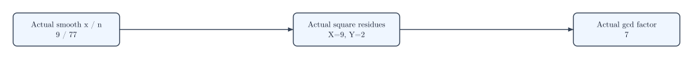
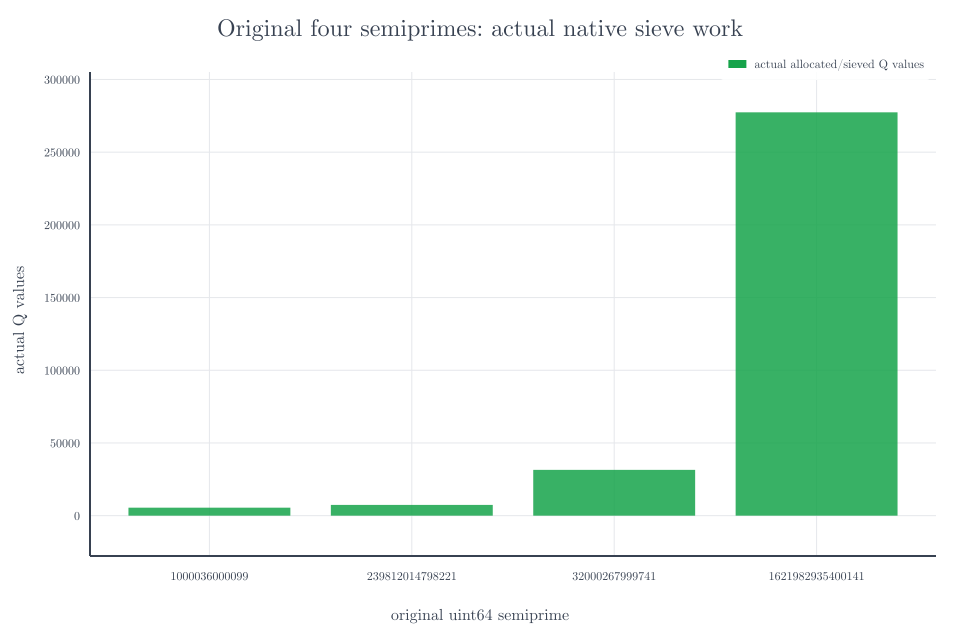
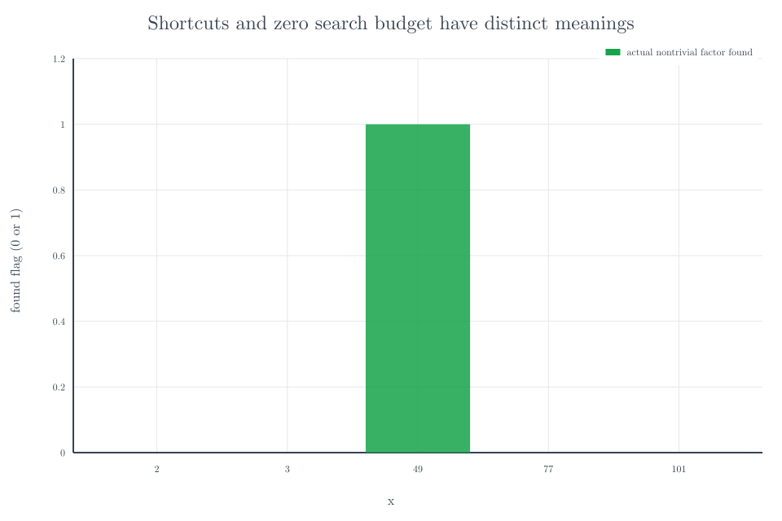
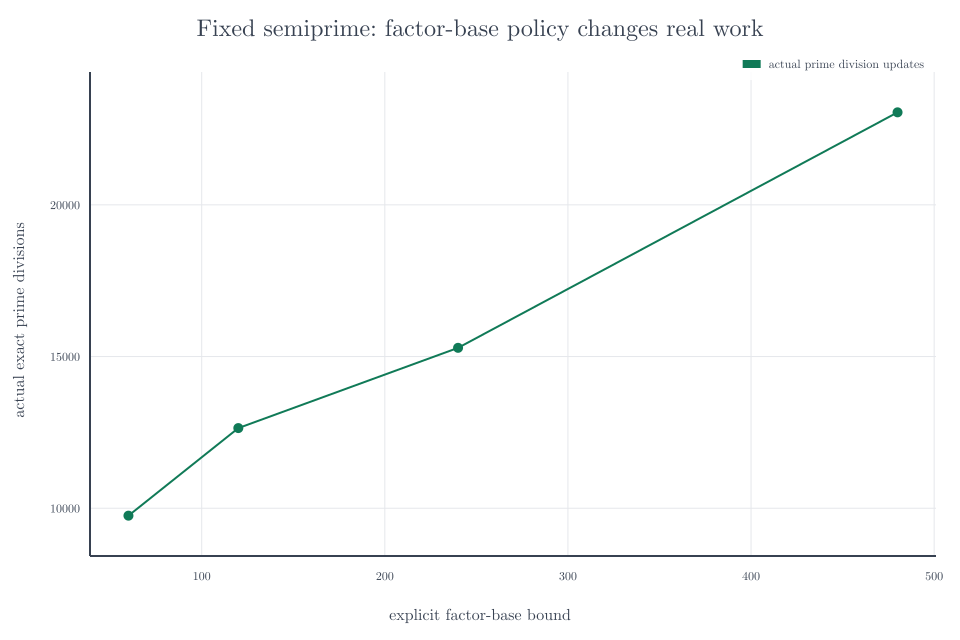

Quadratic sieve: actual smooth relations, parity pivots and square dependencies
Abstract
Factoring an integer can be reduced to finding two different square roots of the same residue. The quadratic sieve collects smooth values of x squared minus n, cancels their exponent parity and extracts a gcd from the resulting congruence of squares. This report reads actual native relations and dependencies, keeps the original four semiprimes, and distinguishes a successful factor from an exhausted bounded search.
Mechanism and mathematical scope
A positive smooth value has \(x_i^2-n=\prod_j p_j^{e_{ij}}\). Select relation rows whose exponent vectors sum to zero modulo two. Their full exponent sums are even, hence
Thus \(n\) divides \((X-Y)(X+Y)\); a gcd of the actual difference may reveal a nontrivial factor. The gcd can also be1 or n, so a dependency is not itself a success certificate. Incremental GF2 elimination records actual pivot columns and selected relation ids. Root-directed sieving removes base primes, followed by full exponent reconstruction before accepting any relation.
General quadratic-sieve asymptotics rely on heuristic smoothness estimates and scalable arbitrary-precision implementations. This uint64 implementation has a bounded factor base/window search. Its measured selected counts are not the old drawn subexponential reference curve, and an exhausted budget does not certify primality.
A tiny actual producing history
The table and native concept diagram read the same producing execution. Every block below is a complete editable C++ program.
#include <dm/dm.hpp>
int main() {
namespace a = dm::algorithms;
namespace g = dm::graphics;
std::filesystem::create_directories("build");
a::QuadraticSieveOptions o;
o.factor_base_bound = 3;
auto t = a::quadratic_sieve_trace(77, o);
const auto &dep = t.dependencies[0];
std::print("\n| actual relation id | x | actual factor-base exponents | pivot column |\n| ---: | ---: | " "--- | ---: |\n");
for (std::size_t i = 0; i < t.relations.size(); ++i)
std::print("| {} | {} | `{}` | {} |\n", i, t.relations[i].x,
t.relations[i].exponents, t.relations[i].pivot_column);
std::print("Actual factor base: {}. Dependency member ids: {}.\n",
t.factor_base, dep.members);
g::Diagram d;
d.node("n0", {0, 0},
std::format("Actual smooth x / n\n{} / 77", t.relations[0].x));
d.node("n1", {10, 0},
std::format("Actual square residues\nX={}, Y={}", dep.X, dep.Y));
d.node("n2", {20, 0}, std::format("Actual gcd factor\n{}", dep.gcd));
d.edge("n0", "n1").edge("n1", "n2");
d.save_svg("build/quadratic_sieve_tiny.svg");
}| actual relation id | x | actual factor-base exponents | pivot column |
|---|---|---|---|
| 0 | 9 | [2] | -1 |
Actual factor base: [2]. Dependency member ids: [0].

The retained original experiment
#include <dm/dm.hpp>
int main() {
namespace a = dm::algorithms;
namespace g = dm::graphics;
std::filesystem::create_directories("build");
const std::vector<std::uint64_t> inputs{1000003ULL * 1000033ULL,
15485863ULL * 15485867ULL,
4000037ULL * 7999993ULL,
32452843ULL * 49979687ULL};
std::vector<double> values;
std::vector<std::string> labels;
std::print("\n| original semiprime | actual factor | complementary factor | found | smooth relations | " "actual windows | actual sieved values |\n| ---: | ---: | ---: | --- | ---: | ---: | ---: " "|\n");
for (auto n : inputs) {
auto r = a::quadratic_sieve_run(n);
values.push_back(r.sieve_values);
labels.push_back(std::to_string(n));
std::print("| {} | {} | {} | {} | {} | {} | {} |\n", n, r.factor,
n / r.factor, r.found, r.smooth_relations, r.windows,
r.sieve_values);
}
auto p =
g::RPlot::barplot(values, labels, "actual allocated/sieved Q values");
p.title("Original four semiprimes: actual native sieve work").x_label(
"original uint64 semiprime").y_label("actual Q values");
p.save_svg("build/quadratic_sieve_original.svg");
}| original semiprime | actual factor | complementary factor | found | smooth relations | actual windows | actual sieved values |
|---|---|---|---|---|---|---|
| 1000036000099 | 1000003 | 1000033 | true | 1 | 1 | 5500 |
| 239812014798221 | 15485863 | 15485867 | true | 1 | 1 | 7400 |
| 32000267999741 | 7999993 | 4000037 | true | 32 | 5 | 31500 |
| 1621982935400141 | 32452843 | 49979687 | true | 43 | 38 | 277400 |

Explicit controls
#include <dm/dm.hpp>
int main() {
namespace a = dm::algorithms;
namespace g = dm::graphics;
std::filesystem::create_directories("build");
a::QuadraticSieveOptions o;
o.factor_base_bound = 3;
o.max_windows = 0;
std::vector<std::uint64_t> inputs{2, 3, 49, 77, 101};
std::vector<double> values;
std::vector<std::string> labels;
std::print("\n| input | actual attempted factor | found | zero-window budget |\n| ---: | ---: | --- | " "---: |\n");
for (auto n : inputs) {
auto r = a::quadratic_sieve_run(n, o);
values.push_back(r.found ? 1 : 0);
labels.push_back(std::to_string(n));
std::print("| {} | {} | {} | {} |\n", n, r.factor, r.found, r.windows);
}
bool bad = false;
try {
a::quadratic_sieve(1);
} catch (const std::invalid_argument &) {
bad = true;
}
std::print("n=1 rejected before logarithmic/sieve arithmetic: {}.\n", bad);
auto p =
g::RPlot::barplot(values, labels, "actual nontrivial factor found");
p.title("Shortcuts and zero search budget have distinct meanings").y_label(
"found flag (0 or 1)").y_limits(0, 1.2);
p.save_svg("build/quadratic_sieve_controls.svg");
}| input | actual attempted factor | found | zero-window budget |
|---|---|---|---|
| 2 | 2 | false | 0 |
| 3 | 3 | false | 0 |
| 49 | 7 | true | 0 |
| 77 | 77 | false | 0 |
| 101 | 101 | false | 0 |
n=1 rejected before logarithmic/sieve arithmetic: true.

Actual selected work and sensitivity
#include <dm/dm.hpp>
int main() {
namespace a = dm::algorithms;
namespace g = dm::graphics;
std::filesystem::create_directories("build");
std::vector<double> x, y;
std::print("\n| explicit base bound | actual base size | actual windows | actual smooth relations | " "actual divisions | factor found |\n| ---: | ---: | ---: | ---: | ---: | --- |\n");
for (unsigned bound : {60, 120, 240, 480}) {
a::QuadraticSieveOptions o;
o.factor_base_bound = bound;
auto r = a::quadratic_sieve_run(1000003ULL * 1000033ULL, o);
x.push_back(bound);
y.push_back(r.divisions);
std::print("| {} | {} | {} | {} | {} | {} |\n", bound,
r.factor_base.size(), r.windows, r.smooth_relations,
r.divisions, r.found);
}
auto p = g::RPlot::create();
p.lines(x, y, "actual prime division updates", {16, 122, 87}).points(
x, y, {16, 122, 87}, 5).title("Fixed semiprime: factor-base policy changes real work").x_label("explicit factor-base bound").y_label("actual exact prime divisions");
p.save_svg("build/quadratic_sieve_work.svg");
}| explicit base bound | actual base size | actual windows | actual smooth relations | actual divisions | factor found |
|---|---|---|---|---|---|
| 60 | 9 | 1 | 1 | 9755 | true |
| 120 | 17 | 1 | 1 | 12642 | true |
| 240 | 25 | 1 | 1 | 15287 | true |
| 480 | 49 | 1 | 1 | 23049 | true |

API and interpretation
The77 example uses base bound3, so the actual retained base is[2]. The first positive smooth value is9 squared minus77=4; its zero parity gives X=9,Y=2 and gcd(7,77)=7. Full positive Q values use signed128 arithmetic and modular products use unsigned128. Hard base/window bounds keep candidate x squared representable. Histories are actual accepted relations and dependency attempts, including the successful final relation. A returned n is unresolved, including on primes; found is independently defined by a nontrivial exact divisor. The base-bound study may exhaust a budget and is labelled as attempted finite work.
Reusable producers, fixtures and histories live in the canonical C++ library. Captured records own their values and do not come from a separate report replay. Selected counters and record/scalar policies are specified at their API boundaries; they are not peak-byte or wall-time budgets. Synthetic structural inputs are controlled fixtures for these mechanisms.
References
Verified in the shared ten-document batch: 108 scoped native cases (22 new plus86 existing; one unchanged Rayleigh failure baseline-confirmed and carried to batch314–323);22 directly instrumented ASan/UBSan cases;91 executable public examples;367/367 full-file definitions plus17/17 common-sampler/engine definitions;10 hovers;32478 independent records/106910 checks;frozen compatibility across all ten families;12 checkout/installed standalone headers and linked consumer;40 executed programs and40 inspected figures with both exports. Legacy retirement follows the completed validation gates.